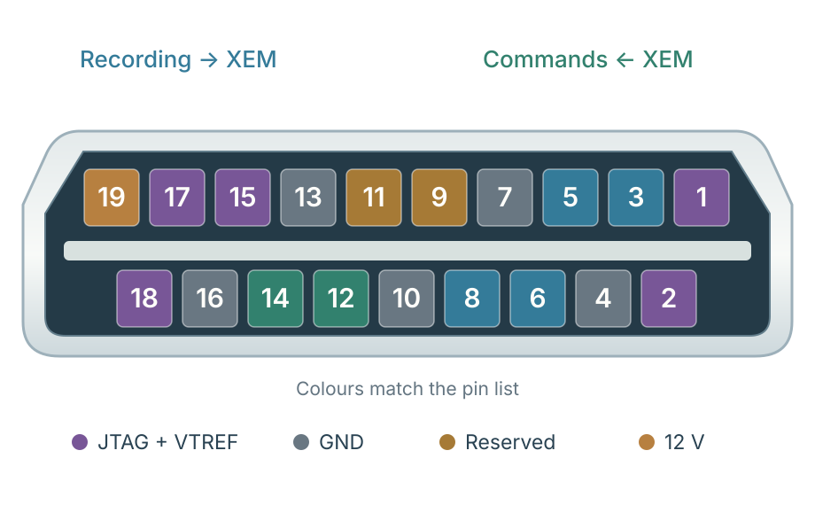

01 / ASIC → FPGA
117 interface pins.
- 64Recording dataASIC 1–8 · DATA1–8
- 24Recording timingASIC 1–8 · CLK32MHz_Out, READ, SYNC
- 09Shared signalsCHIP_RESET · AC_IN · IMP_TST · FE_RESET
SPI_LATCH · STIM_CLK · STIM_START · STIM_EN · STIM_CHB - 04Recording clocksBOARD1–4_CLK
- 08Stim-chip programmingSTIM_CHIP1–4_SPI_DL / DR
- 04Nonstim programmingNONSTIM_BOARD1–2_SPI_DL / DR
- 04SPI clocksBOARD1–4_SPI_CLK
02 / Custom micro-HDMI link
The 19-contact arrangement.
- 1VTREFTarget 1.8 V reference
- 2TMSProgramming state
- 3 / 5TX0 + / −Recording → XEM
- 6 / 8TX1 + / −Recording → XEM
- 9 / 11Reserved
- 12 / 14RX1 + / −Commands ← XEM
- 15TDIProgramming data
- 17TCKProgramming clock
- 18TDOProgramming readback
- 4 / 7 / 10 / 13 / 16GNDReference + return
- 1912 VProtected power input
Micro-HDMI · 19 contactsNumbering source ↗

VTREF supplies translator bias. 12 V protection is drawn in the schematic; JTAG and ground routing remain open.
03 / Proposed components
FPGA board components
Zitong’s proposal · review pending
| Role | Proposed part | Key specification |
|---|---|---|
| FPGA | XC7A25T-2CSG325I ↗ | CSG325 · 15 × 15 mm |
| Status LEDs | 2 LEDs | Power · configuration |
| Fabric clock | Abracon AX3-0006-T ↗ | 100 MHz · 1.8 V HCSL |
| Boot flash | Macronix MX25U1632FZUI02 ↗ | 16 Mbit · 1.8 V · USON-8 |
| GTP reference clock | SiTime SiT9507AI-02P1-1800-125.000000 ↗ | 125 MHz · 1.8 V LVDS |
| Other parts | Micro-HDMI · connectors · test points | LDOs · regulators · inductors |
04 / Full system plan
3 FPGA boards + XEM + BRK.
R10 architecture study · three separate FPGA boardsLayout in progressOpen system 3D ↗